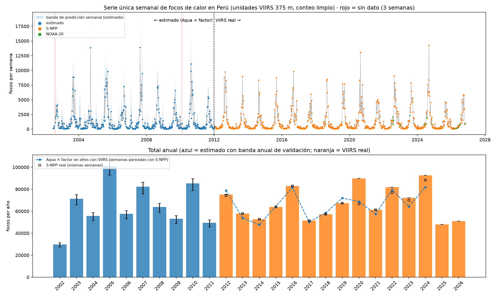
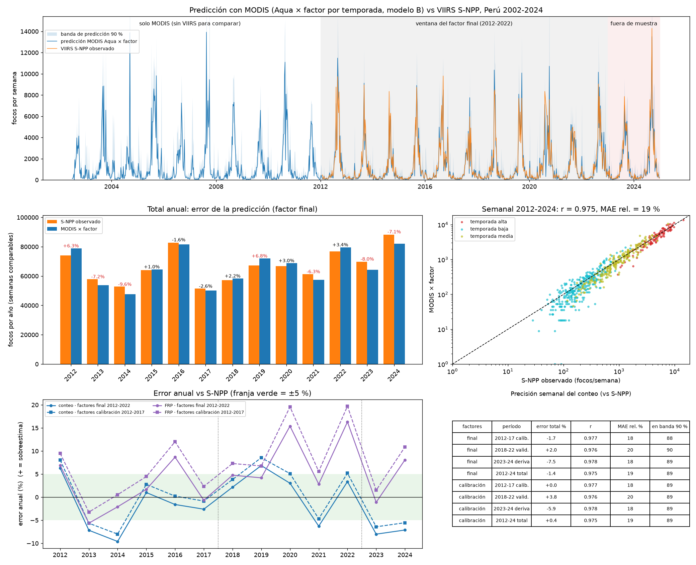
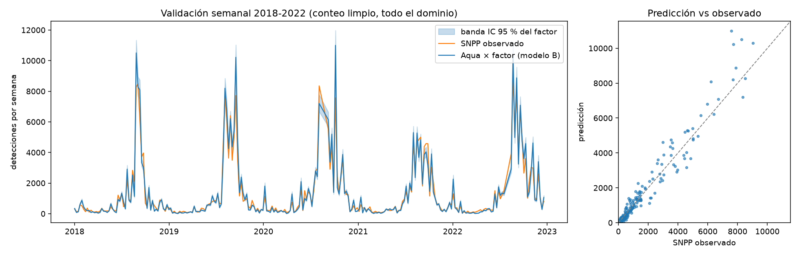
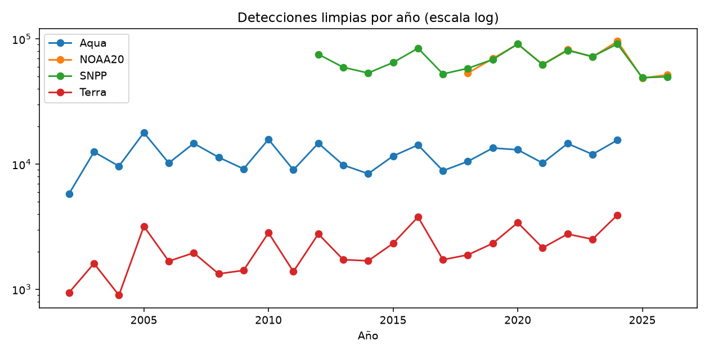

Active Fire Harmonization: From MODIS to VIIRS
In 2012, NASA FIRMS shifted its primary instrument from MODIS (1 km) to VIIRS (375 m). VIIRS detects 3 to 4 times more thermal anomalies than MODIS due to its finer spatial resolution. This pipeline corrects the artificial sensor gap, constructing a continuous, calibrated 25-year historical series.
🛰️ Satellites & Sensors: Historical Timeline (2000–2027)
Click any satellite bar to inspect its orbital equatorial crossing time and role in the calibration.
Filter by role in project
Highlight pipeline windows
⚙️ The 4-Stage Core Pipeline
Modular, fully reproducible, and parameterized via config/settings.yaml.
Ingestion & Cleaning
Quality filtering (>30% MODIS, nominal/high VIIRS), spatial bounding box clipping, spatio-temporal deduplication, and FRP imputation.
src/cleaning.py · src/io_firms.py
Sensor Audit
Checks cross-sensor overlap (Aqua vs Terra vs S-NPP vs NOAA-20), orbital drift diagnostics, and Terra exclusion from GLM due to circadian cycle mismatch.
src/audit.py · Cross-sensor ratios
GLM Calibration
Fits a Quasi-Poisson Generalized Linear Model with log link. Trained on 2012–2017 and blind-validated on 2018–2022 hold-out observed VIIRS S-NPP records.
src/calibration.py · src/validation.py
Harmonization & Export
Applies calibration factors to 2002–2011 with 95% confidence bands. Generates climatological baselines (p10..p90), anomalies, and exports 106 web JSONs.
src/harmonize.py · src/export_web.py
📈 Technical Solution & Scientific Figures
Empirical evidence generated by the pipeline demonstrating model fit and historical accuracy.
1. Reconstructed Harmonized Series (2002–2026)
Final Deliverable
output/reports/harmonized_series.pngContinuous weekly time-series: estimated 2002–2011 period (Aqua scaled with 95% CI) merged seamlessly with 2012–2026 observed VIIRS records.
2. Blind Validation: Predicted MODIS vs. Observed VIIRS
Hold-out 2018–2022
output/reports/prediction_vs_snpp.pngTrained strictly on 2012–2017, the model accurately predicts fire counts and peak seasonal timing across the 5 hold-out evaluation years (mean annual error < 9.6%).
3. GLM Calibration Fit (Aqua vs. S-NPP)
Model B Fit
output/reports/calibration_validation.pngSeasonal factor calibration (wet season vs. dry season). The Quasi-Poisson distribution effectively models overdispersion inherent in satellite fire detections.
4. Raw Sensor Discrepancy (Uncalibrated)
Original Problem
output/reports/audit_annual_counts.pngThe 2012 transition gap: comparing raw MODIS and VIIRS records without harmonization creates a false threefold surge in historical fire frequency.
🎯 Official Calibration & Validation Benchmarks
Empirical benchmarks calculated on NASA FIRMS active fire records.